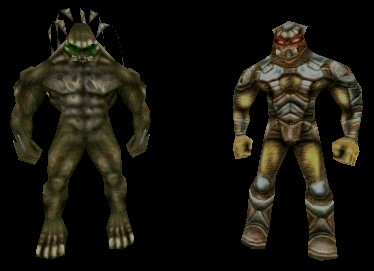
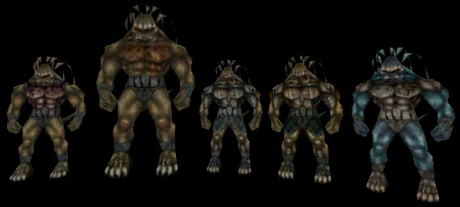
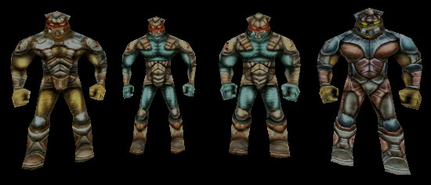

Skaarj

A standard Skaarj Warrior on the left, and a standard Skaarj Trooper on the right (pictured without a weapon). People should notice that they are EXACTLY the same height, not counting the Skaarj Warrior's dreadlocks. |
The Skaarj are the Unreal world's main enemies. They look like highly-evolved reptiles, but they reproduce more like insects, with offspring being born of a single Queen, and only certain male Troopers and Warlords being the only other Skaarj with any reproductive organs at all. (Culturally, this is one reason why the Skaarj put such a small emphasis on wearing any clothes; most of them have nothing to conceal.)
Since there are many different classes of both SkaarjWarriors and SkaarjTroopers, mappers shouldn't be afraid to put a healthy mixture of both types of Skaarj in their maps.
All Skaarj can be set up to perform one of two special actions if desired by the mapper.
- If the mapper uses a Skaarj with the bButtonPusher variable set to True, then the mapper can put this Skaarj in front of a computer console or other mechanical device, and the Skaarj will appear to be hard at work with the controls on the device.
- If the mapper uses a Skaarj with the bFakeDeath variable set to True, then the mapper can put the Skaarj in the level and expect it to be feigning death when the player initially discovers it. The mapper will probably need to raise the Skaarj part of the way off the floor so that it doesn't seem to move into the floor when the player encounters it.
In addition, all Skaarj are skilled in their own form of martial arts. In melee combat, they will attack with their fists or claws, perform a spin attack with both fists, and perhaps even lunge straight at their target (which is capable of knocking the target backwards a good distance if the attack is successful). The base amount of damage for these attacks can be set with the ClawDamage, SpinDamage, and LungeDamage variables in the properties of the Skaarj.
Skaarj Warriors
Skaarj Warriors are known for being more dangerous in melee combat than at a distance. The fact that they have prosthetic claws implanted directly into the backs of their hands means that their melee attacks will do significantly more damage than those of a Skaarj Trooper.

Skaarj Warrior classes from left to right: Skaarj Scout, Skaarj Berserker, Skaarj Assassin, Skaarj Lord, and Ice Skaarj. |
Techniques:
- Be careful when you use Skaarj Berserkers. They have more of a tendency to rush into melee combat than other Skaarj Warriors, but they are not picky as to who or what they attack. In particular, small deathmatches between two or more Skaarj Berserkers are quite common.
- The Ice Skaarj was originally meant to have a resistance to cold temperatures. However, this is yet another feature that Epic didn't implement in Unreal. As a result, the Ice Skaarj is little more than a regular Skaarj Warrior with a bit more color. It's a nice touch to use very few of these, compared to the number of other classes of Skaarj Warriors that a mapper would use. The game depicts them as being very rare among the ranks of the Skaarj.
- The Skaarj Assassin and the Skaarj Lord are not identical in appearance, but the difference is negligible, especially when you're in intense combat with one or the other. It might be very good form to create a team of Skaarj Assassins that are led by a Skaarj Lord. The player isn't going to know the difference, but he might suspect it because the Skaarj Lord is capable of taking much more bodily punishment before going down.
It is also important to note that a Skaarj Warrior is still dangerous at a distance. Because of the circuit-like nature of their claws, Skaarj Warriors are able to charge and release small orbs of electrical energy as a ranged weapon. The orbs originate from channeled bioelectrical energy that the Skaarj Warrior builds up, and the Skaarj Warrior releases the orbs from the space between the two claws on each hand. A Skaarj has a physiology that accounts for a large amount of excess bioelectric energy, so a Skaarj Warrior can use this attack several times per second if necessary.
Skaarj Troopers
Skaarj Troopers represent the more tactical side of the Skaarj race. They are much less gung-ho in their combat technique than Skaarj Warriors, for example. Also, they are known for the fact that they come armed with exactly the same supply of weapons that a player would use.

Skaarj Trooper classes (and their default weapons) from left to right: Skaarj Infantry (Stinger), Skaarj Sniper (Assault Rifle), Skaarj Gunner (Eightball Gun), and Skaarj Officer (Razorjack). The standard Skaarj Trooper uses a Dispersion Pistol as its default weapon. Also, the Skaarj Officer is slightly taller than all other Skaarj Troopers, but this isn't as noticable as the height difference of the Skaarj Berserker compared to other Skaarj Warriors. |
The Skaarj Troopers all have a new variable in their properties called WeaponType. This variable is used to set the weapon the the Trooper comes armed with. Because it's a blank that can be filled with the name of any child class of "Weapon", then Skaarj Troopers can be armed with weapons other than those found in standard Unreal games. For example, I (the author of this page) have personally seen Skaarj Troopers with UT's weapons, and with the weapons that come with other mods, such as Legacy.
The addition of a weapon usable by the player means that the Troopers feel just a bit more like bots rather than actual monsters. However, it should be noted that Troopers still have the melee capabilities that make tham Skaarj, even if they inflict less damage than those possessed by Skaarj Warriors.
Also, Skaarj Troopers possess shield emitters attached to their right wrists (the emitter is on a Trooper's right wrist because the majority of the Skaarj population is left-handed, and shields are typically handled by a fighter's off-hand). When this shield is deployed, the Trooper is invulnerable to all damage inflicted upon him from the direction in which the shield is deployed. He will still grunt from the impact of such attacks, and he is still subject to any momentum changes that occur from these attacks, but they will not successfully damage him. (However, he is still vulnerable if he is hit in the back while he has his shield deployed.)
Known Subclasses
Skaarj
+- FireSkaarj? (UT2004 only)
+- IceSkaarj? (UT2004 only)
+- SkaarjTrooper (UT only)
| +- SkaarjGunner
| +- SkaarjInfantry
| +- SkaarjOfficer
| +- SkaarjSniper
+- SkaarjWarrior (UT only)
+- IceSkaarj?
+- SkaarjAssassin
+- SkaarjBeserker
+- SkaarjLord
+- SkaarjScoutRelated Topics
- Monster Support
- Invasion (UT2004 gametype)